Version 1.1 · October 2026
Subten is intended for people aged 18 and over.
Welcome to the user manual for Subten — the body-recomposition coach for iPhone and Apple Watch. Subten combines food logging (AI photo scanning, barcode, search), calorie and macro targets from your profile with weight-trend tracking, a training module, deep Apple Health integration, and an AI mentor.
This manual covers the whole app: from creating an account and the onboarding interview, through every tab and feature, to subscriptions, privacy and troubleshooting. It is a how-to-use guide: for every feature you will find what it is for, how to operate it step by step, and what the app shows you and why.
No prior nutrition knowledge is assumed. Wherever the app relies on a concept (calorie deficit, macros, energy availability, weight trend), the manual briefly explains it in plain language.
You can read the manual two ways:
| Part | Contents |
|---|---|
| I — Introducing Subten | What Subten is, key concepts (the energy model, targets and calibration, Free vs Premium), a map of the screens. |
| II — Getting started | Account creation, sign-in options, the 6-step onboarding, first-day setup. |
| III — The five tabs | One chapter per tab: Today, Food, Training, Progress, Coach. |
| IV — Targets and weight trend | How Subten sets your calorie and macro targets, calibration, time to goal and the built-in strategies (Cheat day, Refeed day, Diet break, Plateau). |
| V — Apple Watch & shortcuts | The Watch app, complications, the Action Button and Siri shortcuts. |
| VI — Apple Health | What Subten reads and writes, per-type switches, health alerts. |
| VII — Premium & subscription | Free vs Premium, the App Store subscription and trial period, restoring purchases. |
| VIII — Settings, privacy & account | Profile, reminders, data export/import, AI consent, deleting your account. |
| IX — Troubleshooting & FAQ | Common problems and their solutions. |
| Appendix | Glossary. |
Screen chapters (Part III) start with What it is for and then describe the screen, its features and, where relevant, common mistakes and limitations.
Monospace marks something you type.Note: Subten’s interface is available in six languages: English, Slovak, Czech, German, Polish and Hungarian. This manual uses the English interface; the Slovak and Czech editions of the manual use the corresponding localized labels. If your app is set to German, Polish or Hungarian, you are reading this English edition, and the labels on your screen appear in your language.
Subten is an iOS app (with an Apple Watch companion) for body recomposition — burning fat, building muscle, or both. Its tagline: “Nutrition, training and recovery in one place.” Underneath sits a careful engine:
Subten is designed for adults: the app enforces an 18+ age gate during onboarding.
Subten uses a single, deliberately simple energy formula on every screen:
Remaining = Daily target − Eaten
Your daily target already accounts for your planned activity. Unlike many calorie apps, exercise does not inflate your remaining budget: a workout does not “earn” you extra food by default. Activity from Apple Health is shown for information. Only when your measured movement clearly exceeds your plan does the app extend the day’s target, shown as Goal + Extra movement. This prevents the classic double-counting trap where optimistic exercise estimates cancel out your deficit.
Your daily targets come from a standard estimate: the Mifflin–St Jeor equation times an activity multiplier, adjusted for your goal and pace. Such an estimate is only approximate; the real picture comes from your weight trend, which Subten calculates from your weigh-ins while filtering out one-off swings. For roughly the first two weeks, until you have enough logged days and weigh-ins, the Today tab shows the calibration banner. In this version targets are not recalculated by themselves — when your weight changes noticeably, update it in Settings → Profile & goals. Part IV explains the rules and safety rails in detail.
Your training plan drives your nutrition targets (training days can carry different targets than rest days — see day types below). What Apple Health measures is used to check reality against the plan, not to rewrite it minute by minute.
Each day has a type — Strength, Cardio, Rest or Custom — shown as a badge on the Food tab. Day types allow carb cycling: the daily target can differ by day type. Special days set by strategies and modes (cheat day, refeed, plateau protocol, illness, vacation), plus a few days after them, are left out of plateau detection so that, for example, one planned high day doesn’t skew the trend.
The core loop is free: food logging by search, barcode and manual entry, the Today tab, the My Plan training tab, progress tracking, Apple Health sync, reminders, and data export/import. Premium unlocks the AI features (photo scanning, label scanning, meal plans, the Coach) and the full training module (Gym, Sport). Chapter 12.1 has the full comparison.
The app has five tabs:
| Tab | What it is for |
|---|---|
| Today | Your day at a glance: energy ring, quick actions, steps, water, sleep and recovery, today’s training and meals. |
| Food | The food diary: log, edit and plan meals; AI meal plan and shopping list. |
| Training | Your training plan, workout library, active workout with rest timer, personal records. |
| Progress | Weight and trend chart, body composition, body measurements, weigh-in streak, Photo progress. |
| Coach | The AI mentor: chat, daily and weekly reviews, meal plan, shopping list. |
Settings are reached from the gear icon on the Today tab.
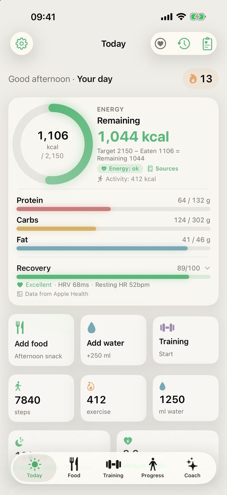
This part takes you from installing the app to your first fully set-up day.
On first launch Subten shows the sign-in screen. You can create an account three ways:
| Method | Notes |
|---|---|
| E-mail + password | Classic registration; you confirm your e-mail. |
| Sign in with Apple | Fastest on iPhone; you may hide your real e-mail. |
| Continue with Google | Uses your Google account. |
Before you sign in or sign up by any method (Apple, Google or e-mail), you must tick the box agreeing to the Terms of Service and the Privacy Policy.
Forgot your password? Tap Forgot password?, enter your e-mail, and follow the link in the reset message — it opens the app directly on the new-password screen.
Onboarding is a 6-step interview with a progress indicator (Step X / 6). From step 3 on you can go Back; step 5 can be skipped.
Warning: Subten is for adults only. The date-of-birth picker will not accept a date that makes you younger than 18.
Step 1 — Welcome. The app introduces itself. It also shows a tip for iPhone 15 Pro and newer: you can assign the Action Button to the Add food shortcut (food menu) or the Scan food shortcut (camera); Open Settings takes you to iOS Settings.
Step 2 — Profile. Choose Gender, set your date of birth, height (120–220 cm), current weight and target weight (35–200 kg each). These feed the initial calorie estimate.
Step 3 — Activity level. Pick from Sedentary, Light activity, Moderate activity, Active, Very active — each card explains what it means in workouts per week. Choose honestly — your daily target is based on it; you can change it later in Settings → Profile & goals.
Step 4 — Goal. Choose Burn fat, Build muscle, Recomposition or Maintain.
A live preview card shows your starting targets: daily kcal, protein/carbs/fat and your BMR and TDEE; with a deficit goal it also shows the deficit and your estimated time to goal (ETA). The bottom of the card names the published formulas behind the numbers.
Step 5 — Training plan (optional). Pick a training split: Full Body 3×, Upper/Lower 4×, Bro Split 5× or Push/Pull/Legs 6×. You can change or build a custom plan later on the Training tab.
Step 6 — Apple Health. Subten explains which data it will ask to access (weight, steps, heart rate, sleep, workouts, energy and water, plus HRV, VO₂ max, blood oxygen, respiratory rate and wrist temperature). Tap Continue. The iOS permission dialog then opens, and you allow or deny access there. Your profile is then saved and the Today tab opens. You can turn syncing on or off later in Settings → Health in Subten, and change individual permissions in iOS Settings (Health → Subten).
The Today tab is your home screen: one glance tells you how the day is going — energy budget, activity, water, recovery, planned training and logged meals. It is also the launch pad for the most frequent actions.
From top to bottom (cards appear only when relevant):
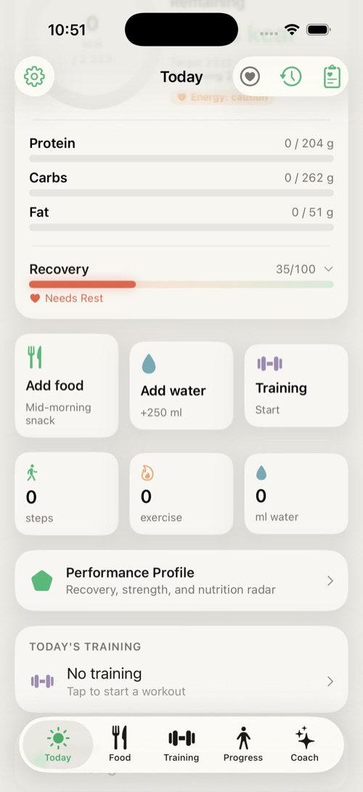
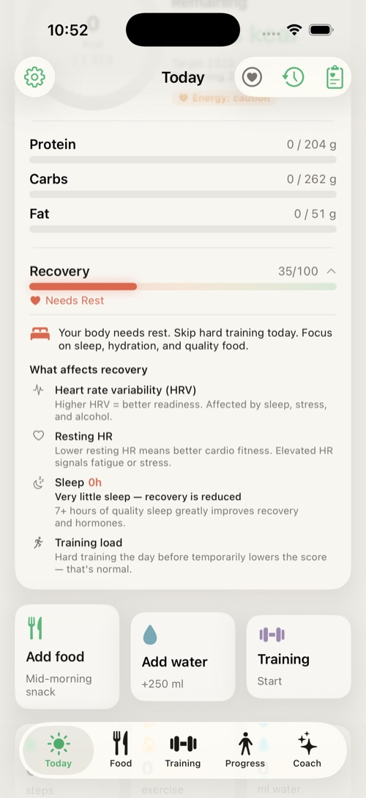
Note — no Apple Watch required. Subten reads the recovery score and every health metric (HRV, heart rate, sleep, SpO₂…) from Apple Health, not directly from a watch. The source can be anything that writes those metrics into Apple Health — an Apple Watch, Garmin, Oura, Whoop, other bands or rings, or even the iPhone itself (steps, sleep). If Apple Health holds no such data, the Recovery bar shows –/100, a short explanation and a Connect Apple Health (or Open Settings) button.
The Food tab is your diary: everything you eat and drink, organized by meal (Breakfast, Mid-morning snack, Lunch, Afternoon snack, Dinner), with daily totals against your targets — including fiber.
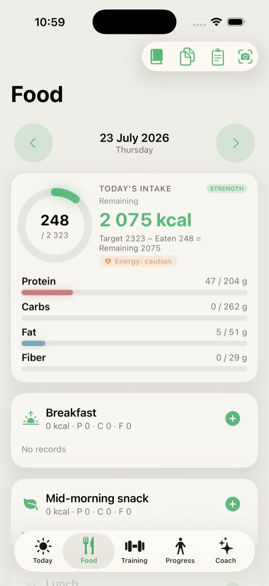
| Method | How | Availability |
|---|---|---|
| Search | Type a name, pick a result, set the amount. Side dishes can be added in the same flow. | Free |
| AI Nutrition Estimate | In search, describe the food in your own words (e.g. “chicken breast 150g”); the AI instantly estimates calories and macros, which you review before adding. | Premium |
| Barcode | Point the camera at the barcode; the product loads from the Open Food Facts database. | Free |
| AI photo scan | Photograph your plate (or pick from the gallery); the AI identifies the meal and fills in macros, which you review and confirm. | Premium |
| Nutrition label scan | Photograph the label; the AI reads the values. | Premium |
| Recipes | Create and store multi-ingredient recipes (Create recipe) and log portions of them. | Free |
| Scan recipe from photo | Photograph a cookbook page, a web screenshot or a handwritten recipe; the AI fills in the name, ingredients and instructions and estimates the macros. | Premium |
| Quick add | Type a name and the values Per 100 g (calories, protein, carbs, fat, fiber), then the weight you ate under Portion. The diary logs the scaled amount (the Total line). | Free |
| Favorites / Recent / Frequent | One-tap re-logging of foods you use often (save with the heart icon). | Free |
Tip: Photo scans work offline too — they are queued and processed when you’re back online. A banner shows pending and failed scans; tap it to open the scan queue.
Tip for the best result: The scanner has no modes to switch — it recognizes a barcode on its own when you point at it, and after you take a photo the AI works out whether it shows food or a label (the Barcode · Label · Food line under the shutter is only a hint). If a product isn’t found by barcode (the Product not found alert), point the camera at the packaging’s nutrition table (values per 100 g or per serving) and tap Photo packaging (Premium). The AI reads the macros from it and fills them in for you — more reliable than estimating from a photo of a plate. Add manually opens Quick add with the barcode already filled in.
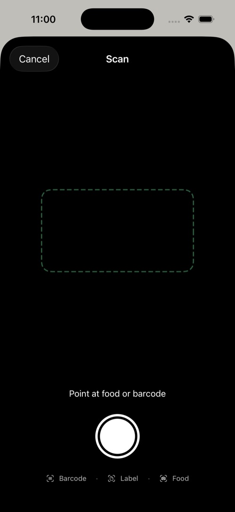
Tap any food row to edit: change grams with a ±10 g stepper or presets (50/100/150/200/300 g), or override macros entirely. Icons on the row save to favorites (heart), move to another meal (arrows) or delete (trash, with confirmation). Touch and hold the row for Copy to today and View details.
Toolbar → Meal plan: tap Generate and the AI builds a 5-meal day matching your current targets. You can type preferences into Preferences (optional), e.g. “Asian cuisine, no dairy”. Use Swap to replace a meal, or open its Detail to save it to your recipes. Add plan to day logs the plan, and Add to shopping builds the Shopping list from its ingredients.
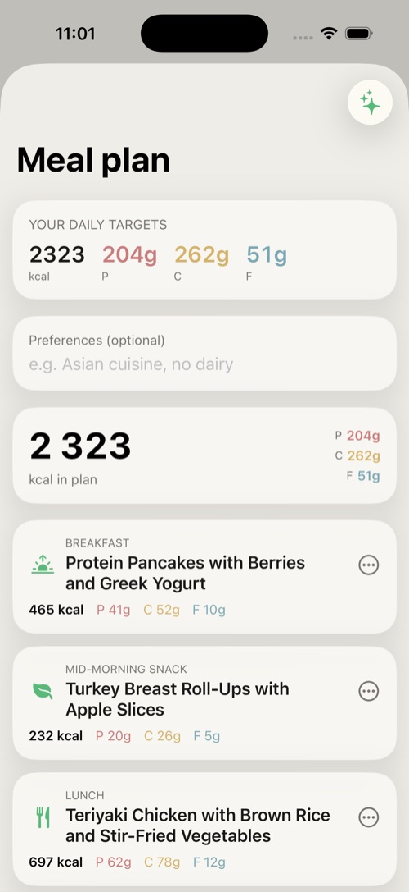
The Training tab holds your plan, your workouts and your history. It has four sub-tabs: My Plan, Gym, Sport and Library.
Your active plan: a resume-workout banner if one is in progress, the week strip, today’s workout, a section of Apple Watch workouts you can import, weekly stats and your workout history. With the + button at the top left you can Add activity (log cardio manually) or Create training plan.
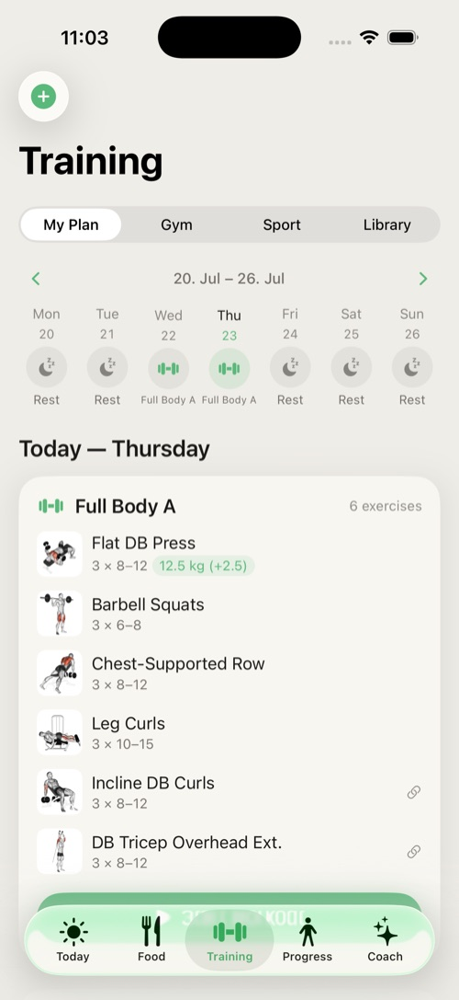
Starting a workout opens the live screen: exercises with sets and reps, a rest timer (±15 s or Skip), and a Live Activity on your Lock Screen and in the Dynamic Island with Set done and Skip rest buttons, so you can run the workout without unlocking. Rest breaks between sets can be turned off or given a fixed length in Settings → Training (Rest breaks between sets, Rest length; default By exercise). Finishing a session records it to history and (if allowed) to Apple Health; new Personal Records are detected automatically.
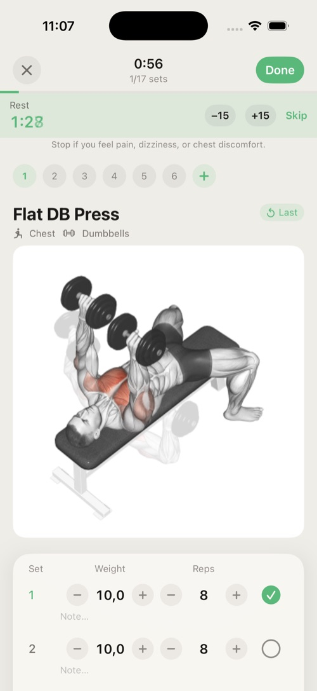
Without Premium these sub-tabs show a paywall card.
The exercise library: filter by muscle group, watch animated demonstrations, read technique instructions, and create custom exercises.
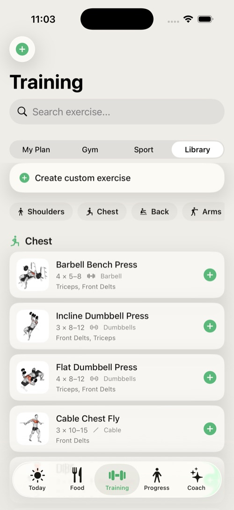
Note: The training module includes an exercise disclaimer — Subten provides guidance, not medical advice. Stop any exercise that causes pain.
The Progress tab tracks the outcome: weight, trend, body composition, measurements and photos.
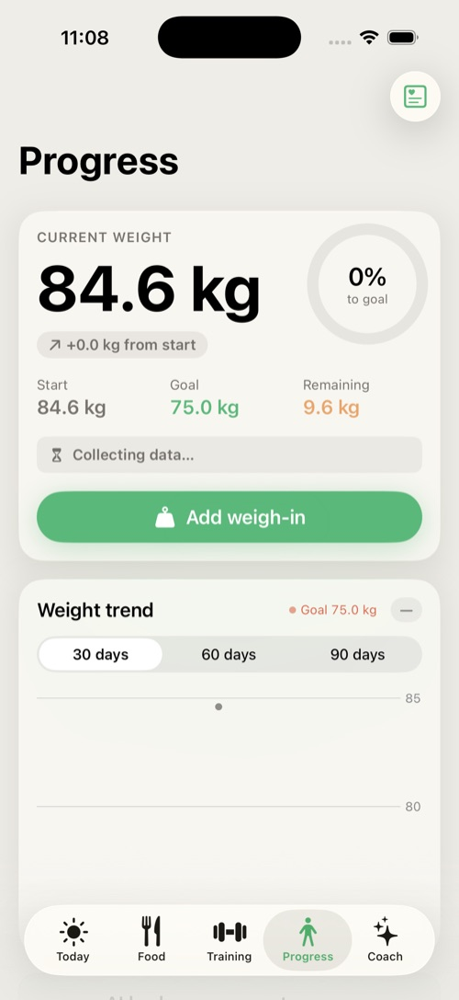
The Coach tab is your AI mentor: a chat that knows your data and four one-tap tiles. It explains, suggests and — with your confirmation — acts.
Note: As required by the EU AI Act, the Coach discloses that you are communicating with an AI mentor. It is not a doctor, nutritionist or trainer; for medical concerns see a professional. Below the notice a Sources link (also in the ✦ menu at the top right → Science & sources) lists the sports-science and public-health sources the Coach draws on.
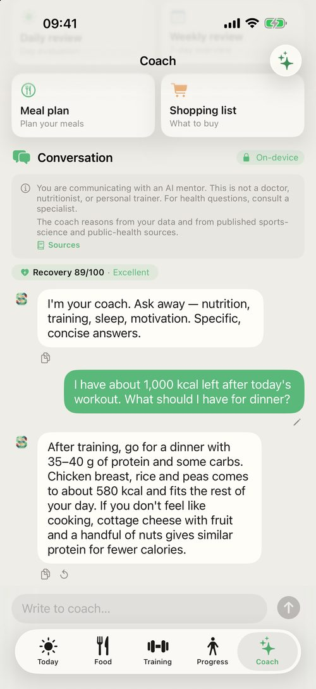
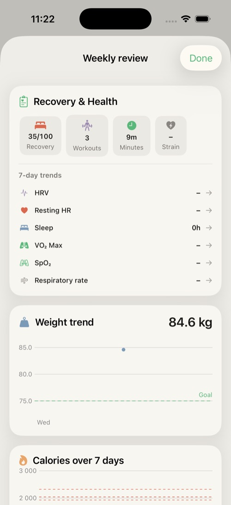
Subten can run the Coach’s text features (chat, the daily and weekly reviews, plateau analysis) directly on your iPhone — without sending them to the cloud. It is not on by default: you turn the model on and download it once (see below), and it needs Premium.
How to tell in chat: when the Coach answers with the model on your iPhone, a badge with a lock and the word “On-device” shows to the right of the Conversation heading. When that badge is absent, replies are handled by the cloud. Simple rule: lock = on-device, no lock = cloud. (Exception: if local generation fails and Subten silently falls back to the cloud, the badge stays visible.)
The local model is only available on iPhones with 6 GB of RAM or more; on 6 GB iPhones replies are slower. On weaker devices (under 6 GB) the Coach always uses the cloud, the AI on your iPhone section doesn’t appear in Settings and the “On-device” badge never appears.
For on-device AI to work, Subten needs a language model (about 3.4 GB; the app shows the exact size before you agree). The fine-tune adapter ships inside the app, but the base model is not downloaded until you turn it on:
Once the model is on and ready, Subten decides automatically — you don’t switch anything. The local (on-device) model is used when all three conditions hold at once:
In that case the On-device badge shows next to Conversation and the request is not processed in the cloud. In every other case the cloud (OpenRouter API) is used:
| Feature | Where it runs |
|---|---|
| Chat (including logging a food/activity), daily/weekly review, plateau analysis | Local* |
| Food photo scan, nutrition-label and recipe scan | Always cloud |
| AI meal plan | Always cloud |
| AI food estimate from typed text | Local if AI food estimate on your iPhone is on (the default on iPhones with 8 GB of RAM); an unusable result is answered by the cloud. Otherwise cloud. |
| The model is off or isn’t ready yet | Cloud |
* If local generation fails, Subten silently falls back to the cloud so you still get an answer (except in Private mode).
Settings → AI on your iPhone has a Private mode: AI on device only toggle. It can only be turned on once On-device AI model is on (turning the model off also turns Private mode off). The normal behaviour already prefers the device; this toggle additionally disables the cloud fallback for the Coach’s chat and reviews — if the local model can’t answer, it shows an honest error rather than sending data to the cloud. Once the model is ready, chat and reviews also work without internet.
Even in Private mode, cloud features stay in the cloud: food photo, label and recipe scans and AI meal plans — these simply won’t run without the cloud. The AI food estimate from typed text runs on the iPhone only with AI food estimate on your iPhone turned on; an unusable result is still answered by the cloud. Your progress photos are never sent to us or to AI, in any mode.
The Coach is a Premium feature. Without Premium you can open the tab, but sending a message shows the card AI Coach is a Premium feature with an Unlock Premium button; the daily and weekly reviews show that AI features are part of Premium instead of an AI text.
This chapter explains, in user terms, how Subten sets your daily goal and how it uses your weight trend.
Until you have at least 3 weigh-ins in the last 3 weeks (the first at least 14 days old) and at least 10 days with logged food, the Today tab shows the Calibrating your targets banner (you can close it). The starting targets are deliberately conservative.
Subten calculates your daily calorie and macro goal from your profile — during onboarding and again whenever you change, for example, your weight, goal, pace or activity in Settings → Profile & goals (with Auto on) and tap Save changes. In this version the goal is not recalculated by itself from your logged food and weigh-ins — when your weight changes noticeably, update it in your profile. Safety rails:
The time-to-goal estimate is in the Current weight card on the Progress tab. It is recomputed from the measured trend of your weigh-ins over the last 14 days and can read X more weigh-in(s) in 14 days for a goal estimate, Keep weighing in — goal estimate in X day(s), Collecting data…, No clear trend yet, Goal reached or a date (Goal ~…). If the current trend would take longer than about two years, the app caps the estimate at two years rather than display fiction.
Settings → Advanced → Life situations & Strategies (or the heart icon at the top right of the Today tab) opens Life Situations. At the top are the temporary modes I’m sick, Cheat day and Vacation (only one can be active at a time); below them are the Advanced strategies:
| Strategy | What it does |
|---|---|
| Cheat day | A planned day with higher intake (you set the extra kcal); the day and a few days after it are left out of plateau detection. |
| Refeed day | A planned higher-carb day, useful in long calorie-deficit phases. |
| Diet break | 7–14 days at maintenance calories (TDEE). |
| Plateau | Detects 14+ days of weight stagnation and offers the Plateau protocol with recommended steps (refeed, diet break or adjusting the deficit). |
| I’m sick / Vacation | Temporary modes (rest with training paused / higher intake, relaxed mode); these days and a few days after them are left out of plateau detection. |
Using the built-in strategies and modes (instead of ad-hoc off-plan days) keeps your data clear and plateau detection more reliable.
The Subten Apple Watch app is an optional bonus — a convenient glance at your day right on your wrist (rings, water, complications). It is not required to use Subten: the health data (recovery, sleep, heart rate…) is read from Apple Health independently of it, so any other brand of watch or wearable sensor that feeds Apple Health works just as well (see chapter 11).
The Watch home screen mirrors your day:

You can add three Subten complications to your watch face: Calories (remaining calories), Recovery (score 0–100) and Water. On the iPhone Home Screen there are the Calories today, Calories + Macros, Body progress and Body progress + widgets; on the Lock Screen Calories and Calories (inline).
On iPhone 15 Pro and newer you can map the Action Button to Subten’s Add food or Scan food intent. The same intents work with Siri and the Shortcuts app; the Watch adds a Log water intent (logs water without opening the app).
Subten asks for Health access in onboarding step 6 through the iOS permission dialog, where you allow or deny it; later you control it in Settings → Health, each type separately.
Subten reads whatever is in Apple Health, regardless of which device wrote it. An Apple Watch is not required — anything that feeds Apple Health works: an Apple Watch, Garmin, Oura, Whoop, other bands and rings, or the iPhone itself (steps, sleep). The more data Apple Health holds, the more recovery and recommendations have to go on; without it Subten still works, those features just stay empty.
| Data | Direction |
|---|---|
| Weight | read and write |
| Workouts | read and write (with workout sync on, a strength workout you finish in Subten is saved to Apple Health) |
| Steps, Active energy, Sleep, Water, consumed calories, body fat, VO₂ max | read |
| HRV, resting heart rate | read (recovery score, together with sleep) |
| SpO₂, respiratory rate, wrist temperature | read (night metrics in the recovery detail, health alerts) |
Health alerts: when the data shows anomalies (unusual SpO₂, respiratory rate, heart rate, HRV, temperature or sleep), Subten surfaces a banner on the Today tab. These are informational nudges, not diagnoses.
Tip: If numbers look doubled (e.g. a workout counted twice), check that only one app writes workouts, or disable that type’s sync in Settings → Health → Sync by type.
| Feature | Free | Premium |
|---|---|---|
| Food logging: search, barcode, manual, recipes, favorites | ✓ | ✓ |
| Today, Progress, streaks | ✓ | ✓ |
| Training — My Plan, Library, Personal Records | ✓ | ✓ |
| Apple Health sync, reminders, Watch app | ✓ | ✓ |
| Data export & import | ✓ | ✓ |
| AI food photo, label & recipe scanning; AI food estimate from text | — | ✓ |
| AI meal plans & shopping list | — | ✓ |
| AI Coach (chat, reviews) | — | ✓ |
| Training — Gym & Sport (sport plans) | — | ✓ |
| iCloud sync | ✓ | ✓ |
The paywall offers Monthly and Yearly plans (Yearly is marked Best value with a per-month breakdown). Purchases go through your Apple ID; subscriptions auto-renew unless cancelled at least 24 hours before the end of the period in iOS: Settings → [your name] → Subscriptions. Restore purchases recovers an existing subscription on a new device.
The trial period is an introductory offer from the App Store on each plan: 1 week on the monthly plan, 2 weeks on the yearly plan. It applies only to your first Premium subscription on your Apple ID — the App Store decides eligibility, and its purchase sheet shows the exact terms before you confirm. You aren’t charged during the trial; unless you cancel at least 24 hours before it ends, it automatically converts into a paid subscription.
The app itself never starts a trial — after onboarding you use the free version. When Premium ends, the AI features and the Gym and Sport sub-tabs lock again. Your data is never locked away: logging, progress and export keep working without Premium.
Open Settings from the gear on the Today tab.
| Section | What is there |
|---|---|
| Edit profile → Profile & goals | Gender, height, current and target weight, activity level, goal, pace, training experience and Daily goals (Auto or manual) — targets recompute. |
| Subscription | Premium status and activation (the paywall, with Restore purchases). |
| AI on your iPhone | Only on iPhones with 6 GB of RAM or more (§8.3): On-device AI model (one-time download over Wi‑Fi, included with Premium), Private mode: AI on device only and AI food estimate on your iPhone. |
| Training | Rest breaks between sets (on/off) and Rest length — By exercise or 15–300 s. |
| Reminders | Breakfast, lunch, dinner, water, training, weigh-in — each with its own time. |
| Health | Master toggle plus per-type sync switches. |
| Units | kg / lbs (display and input; weight is always stored in kg). |
| Language | System, or one of six languages: English, Slovenčina, Čeština, Deutsch, Polski, Magyar (restart required). This manual exists in English, Slovak and Czech; with German, Polish or Hungarian the English manual opens. |
| Food thumbnails | Emoji and icons next to meals and on the scan card (toggle). |
| Advanced | Life situations & Strategies; Export & Import of your data. |
| Feedback | Send feedback to the developer. |
| Account | Sign out; Delete account & data. |
| AI in Subten | What the AI features do, the AI data sharing toggle, Privacy policy, Science & sources and the disclaimer. |
| About | Version, User manual, Science & sources, Acknowledgements. |
A banner says “Food database failed to load.” Tap Retry. If it persists, force-quit and reopen the app.
My photo scan is stuck “pending.” Scans queue offline and process automatically once you’re online. Open the scan queue from the banner to retry failed items.
Prices don’t load on the paywall. Price unavailable, try again later means the App Store didn’t respond — tap Try again, check your connection.
My targets haven’t changed in weeks. That is expected: in this version the daily target is not recalculated by itself (§9.2). When your weight changes noticeably, update it in Settings → Profile & goals (with Auto on) and tap Save changes.
Remaining doesn’t grow when I exercise. By design — see the energy model (§2.2).
Steps/weight don’t sync. Check Settings → Health: the master toggle and the per-type switch. Then check iOS Settings → Privacy & Security → Health → Subten.
I changed the language but the app is mixed. Restart the app — the language switch requires it.
The Coach tab just shows an unlock card. The AI Coach is part of Premium; subscribe (the App Store offers a trial period, §12.3). If you are Premium, tap Restore purchases on the paywall.
I can’t select my birth date. Subten is 18+; the picker enforces it.
Deleting my account failed. You need a network connection (the server copy must be wiped too). Try again online; contact support via Settings → Feedback if it persists.
| Term | Meaning |
|---|---|
| BMR | Basal metabolic rate — energy burned at complete rest. |
| TDEE | Total daily energy expenditure — BMR plus all activity; your true maintenance. |
| Deficit / surplus | Eating below / above maintenance — the basis of burning fat / building muscle. |
| Macros | Protein, carbohydrates, fat (Subten also tracks fiber). |
| Recomposition | Burning fat and building muscle in the same period. |
| Energy Availability (EA) | Energy left for the body after training; chronically low EA harms health and adaptation. |
| Day type | Strength / Cardio / Rest / Custom — drives per-day targets (carb cycling). |
| Calibration | The first ~2 weeks, until you have enough logged days and weigh-ins; until then the Today tab shows the Calibrating your targets banner. |
| Refeed | A planned higher-carb day within a diet phase. |
| Diet break | 7–14 days at maintenance calories (TDEE). |
| Streak | On the Today tab: consecutive days with at least one logged meal. On the Progress tab: the Weigh-in streak, consecutive weeks with at least one weigh-in. |
| HRV | Heart-rate variability — a recovery indicator read from Apple Health. |
| Live Activity | The iOS lock-screen widget shown during an active workout. |
Subten — User Manual · v1.1 · © 2026